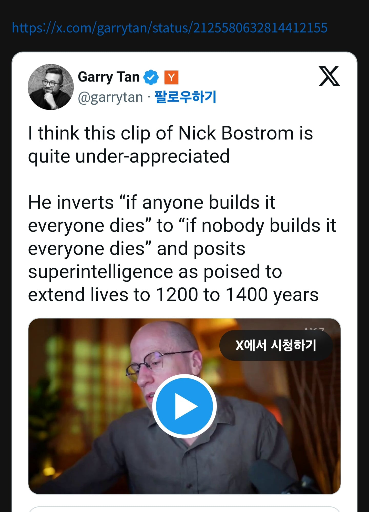
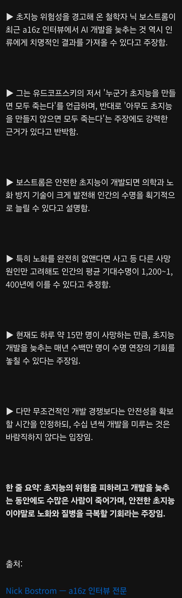

이미 돌이킬수없는 강을 건넜음. 애매한인공지능의 시대가 인류에겐 더 지옥일걸. 기계신을 만들어서 불로불사라도 만드는게 나을거같음
근데 솔직히 나 죽기전에 초지능 한번 보고 싶긴해
인간은 모두 죽죠
gta몇까지 나오는거냐 이러면
트럼프 2000살
마 스텔라리스 안해봤나 우주로 나가려면 필수다 언제까지 지구에서만 놀껀데 우주로 나가면 실업걱정다 해결됨
초인공지능으로 기후 문제 해결하자
이름은 퀸이다
안전한 초지능이라는게 도대체머임?? 초지능자체가 인간을 이미 띄어넘는건데 그게 안전한지안한지 애초에 어케알수잇음??
첫 초지능을 '인간조아', '인간에게 모성애를 느끼는 존재'로 만들면 해결될 거라는 전문가의 말이 있었음.
우리 인간 아들,딸들을 엄마처럼 돌보고 싶어하는 애정을 가진 존재가 첫 초지능이면 걔가 개발하는 다음단계의 초지능도 인간조아상태고, 그 다음도 인간조아상태일것이라는 긍정적 예측...ㅋㅋ
우리 인간 맴매좀 맞자! (대량살상무기)
그래서 AI 자체를 통제하려하기보다는 대원칙인 AI 헌법을 잘 만드는 것에 집중하는 철학자들이 있음
인류의 수명이 1000이 넘는다? 태양계 지배하지 않는 이상
자원 부족으로 공멸할 듯
뭔 개똥철학을 ㅋㅋ
이거 보고 문명 똥지구 켰다. 우월 승천 승리 간드앗
갑자기 1200살 이러니까 벙뜨네 ㅋㅋ
근데 노화가없는데 1200~1400년은 어떻게나왔지? 사고사를 빼면 안죽는다는 뜻 아닌가
우리 부모님세대는 혜택볼수있으면 좋겠다
ㄹㅇ.. 나는 다른거 다 떠나서 시발 나만 살아있는 상황이 올꺼 같은 오묘한 좆같음이 있음
생각해보면 엄청 멋진 일 아니냐?
인류 역사 30만년간 인간은 길어야 100년 살고 죽도록 정해져있었는데
갑자기 우리 차례부터 사실상 영원에 가깝게 살 수 있게 된다는거잖아?(역노화 기술도 계속 발전한다는 전제하에)
모든 걸 80세 100세까지로 계획하고 살아왔는데 갑자기 1000년이 넘게 살게된다는 건..
빨리 치트키 쓸수있는 통속에 내 뇌를 넣어다오
능지떨어지는 개돼지진상새끼들이 1500년 더 살아갈 생각을 하자니 뭣같은데?
지금당장 모든 기업의 경영권을 AI 가 가져간다고 하면 납득을 하느냐가 문제지
회사 윗대가리들 노동자를 AI로 대체하려고 싱글벙글일텐데 CEO부터 AI로 대체해야 뭐가 될껄
그 수명 늘리는 기술을 왜 모두가 누리게 줄꺼라고 생각하지?
지금 당장 미국에서 의료 보장만 잘해도 평균 수명 10년은 늘어 나는데
그렇게 하면 사회주의자라고 욕하는게 미국 현실인데?
ㅋㅋㅋ 트럼프 시진핑 장기집권